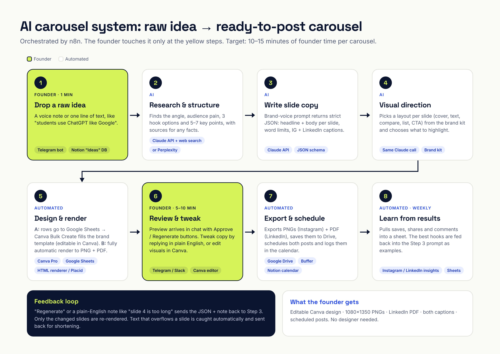

All projects / Part 3: AI-powered content creation system
The sample below was made with the workflow on this page. The founder's one-line idea went through the research and copy prompts, which produced structured slide data, and the renderer turned that into 9 on-brand slides plus Instagram and LinkedIn captions.
Input idea: "students use chatgpt like google, type 4 words and get generic junk. want a post on how to prompt better. tie to our bootcamp."
Orchestrated in n8n. The founder only does steps 1 and 6. Everything else runs on its own.

Start with tools the founder already pays for, and add paid automation only when volume justifies it.
| Job | Recommended | Why | Alternative |
|---|---|---|---|
| Orchestration | n8n | Visual workflows, can be self-hosted, and has nodes for Claude, Google Sheets, Telegram, Drive and Canva | Make |
| Idea capture | Telegram bot or Notion "Ideas" database | The founder can send an idea from their phone in seconds | Google Form, WhatsApp Business API |
| Research | Claude API with web search | Structured reasoning plus sources, so the post has no made-up stats | Perplexity API |
| Copy + visual direction | Claude API, JSON output | Follows a brand-voice prompt and strict word limits, and returns data a template can use | ChatGPT / Gemini API |
| Design (editable) | Canva Pro brand template + Bulk Create | Fills a fixed brand template from a sheet, and the founder edits in a tool they already know | Figma + a sheet-sync plugin |
| Design (fully automatic) | HTML template renderer (used for this sample) | No extra cost, pixel-perfect, version-controlled, and renders in seconds | Canva Autofill API (depends on plan), Placid |
| Cover images (optional) | An image model via API | Only for covers that need a visual. Text-first carousels don't. | Canva Magic Media |
| Review & approval | Telegram / Slack message with Approve / Regenerate | Review happens where the founder already is | |
| Storage + scheduling | Google Drive + Buffer | One folder per post, with scheduling for both Instagram and LinkedIn | Meta Business Suite + LinkedIn native |
The two AI calls that do the heavy lifting. Brand rules live in the prompts, so every carousel comes out on-voice.
SYSTEM: You are the content strategist for {brand}, an AI-skills education brand for Indian college
students and early-career professionals. Turn a founder's rough idea into a carousel plan. Be specific
and practical. Never invent statistics. If a point needs a fact, find it with web search and cite it, or leave it out.
USER: Raw idea: """{idea}"""
Return: 1) the one-sentence takeaway 2) who it's for + their pain 3) 3 hook options (≤10 words) and your pick
4) 5-7 key points in teaching order, each with a concrete example 5) a CTA for: {current_campaign} 6) sourcesSYSTEM: You write carousels for {brand}. Voice: direct, warm, practical. Short sentences. No hype words, no emoji.
Rules: 7-10 slides; slide 1 = hook, second-last = recap, last = CTA. Headline ≤9 words, body ≤35 words.
Wrap the one key word per headline in ==double equals== (becomes a highlighter).
Pick a layout per slide: cover | text | compare (weak "instead of" vs strong "try") | list | cta.
Also write an Instagram caption (5 hashtags) and a LinkedIn caption (ends with a question).
Return ONLY JSON: {"slides":[{"layout","kicker","number","headline","body","bad","good","items","action"}],
"caption":{"instagram","linkedin"}}
USER: Carousel plan: {step_2_output}USER: Here is the carousel JSON and the founder's feedback: "{feedback}".
Return the full updated JSON. Change only what the feedback asks for.
→ n8n re-renders only the changed slides. Text that overflows a slide is caught by the renderer
and sent back to this step with "shorten slide N".